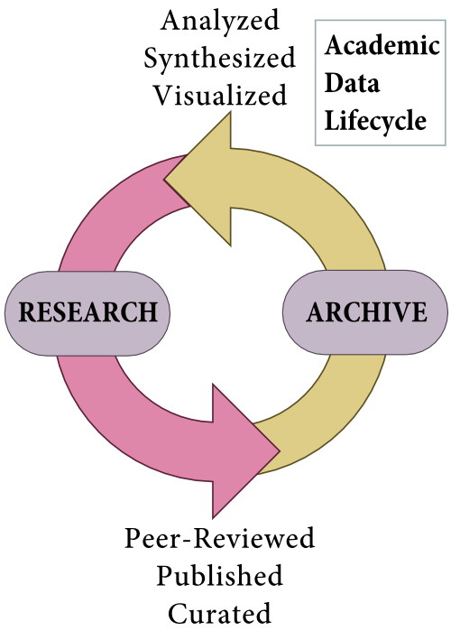
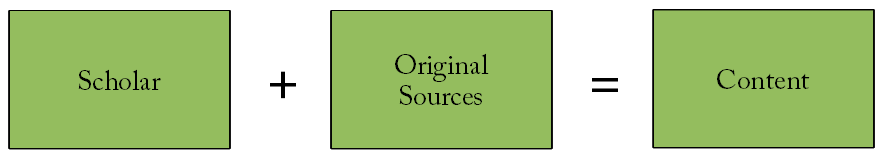
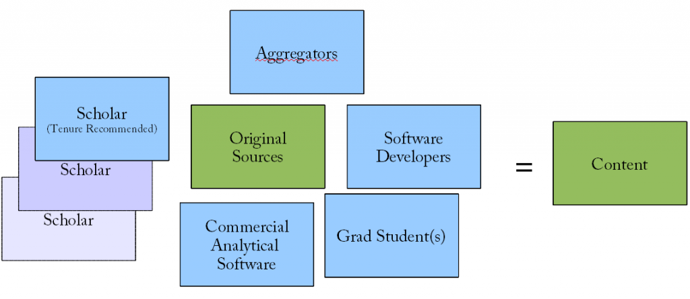

The following is derived from a presentation I was fortunate enough to have an opportunity to give to the Stanford University Libraries & Academic Information Resources (SULAIR) advisory council on the subject of supporting humanities faculty interested in doing Digital Humanities scholarship. Along with doing the typical Digital Humanities Dance, wherein I try to express what DH might mean to certain practitioners while foregrounding the very real disagreements still in place, I made a point to note that nebulous and overarching definitions of the Digital Humanities simply are not actionable. To echo the thoughts of a Stanford dean from an earlier meeting, if there is no definition of the Digital Humanities, then it becomes very difficult to give the opportunity to prospective donors to support it. Likewise, while it may be more philosophically accurate to describe the Digital Humanities as a “community of practice” or even as “anything that a modern humanities scholar does”, you cannot build roles and structures to support that kind of definition. The definition I gave, which I think is actionable, was as follows:
The Digital Humanities involves digital objects, digital tools and digital techniques being brought to bear on traditional humanities scholarship.
So, as I attempted to explain to them, my role was designed to help traditional humanities scholars integrate digital objects into their research, such as helping Ursula Heise examine species biodiversity databases as pieces of literature; give access to digital tools, such as ArcGIS, Gephi, Protovis & MALLET, to examine traditional objects in humanities scholarship, such as collections of letters; and to help use “digital” techniques (which oft are not really digital but rather have grown in sophistication and visibility in the digital age) such as mind maps, topic modeling and tag clouds, in the exploration of both digital and traditional objects. While all of these activities may be commonplace in the academy five or ten or twenty years from now, they currently require a different support structure than currently exists for traditional humanities scholars.
That support, I think, reflects an outmoded sense of what it means to perform modern humanities scholarship. Support in the university has focused on the concept of an academic data lifecycle, wherein research and archives are simply different data states.



The particular value in this reformulation of how we look at research in the university is that the three typical areas of content do not align well with the traditional tripartite views of the university, whether it is Faculty/Staff/Student or Researchers/Teachers/Librarians. In my short time here at Stanford, I’ve seen quite clearly that there are tenured faculty members who are building archives, curating datasets and focused on content management. There are staffmembers who are contributing to (and also leading) research. And though I don’t deal with undergraduates, it’s my understanding that a modern university is supposed to have moved away from the model wherein students were mere consumers of content and were meant to take an active part in the creation and managing of that content.
This may seem like a very trivial distinction, but in my experience the traditional structures and roles built to support the humanities are oriented toward supporting faculty or libraries or students. My own position falls under Faculty Computing. And while I think this is a serviceable support ontology, it tends to preference more practical definitions of support. Content creation is expensive and complex and requires many more resources than content distribution and content management. At the cost of providing reliable access to a large dataset that is properly described and formatted to several hundred readers a month, you may be able to support a single project or faculty oriented toward content creation. It requires some real justification to bring those resources to bear, but humanities scholarship is changing and needs those resources. Traditionally, a single scholar had all the tools and skills needed to create content.




While the current structures supporting faculty are providing incremental results in the area of the Digital Humanities, the lack of focus on supporting digital content creation in the humanities has resulted in this critical aspect of the modern research university being supported in an oftentimes informal or implicit manner. I don’t think the formal recognition of research in the humanities as content will magically jumpstart stalled digital humanities initiatives or solve every problem, but it will provide the language to better develop structures and roles to support the creation and evaluation of digital humanities scholarship.